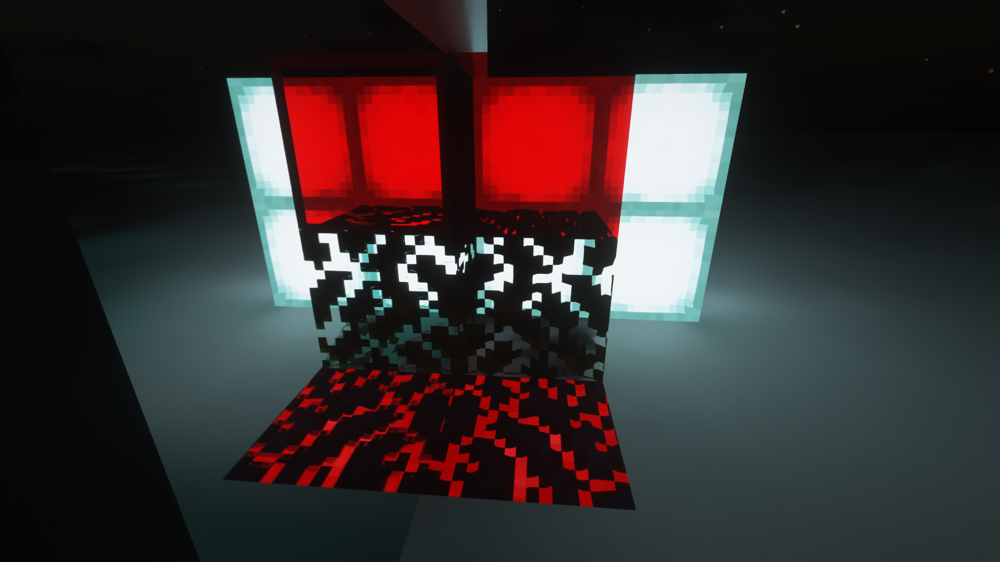
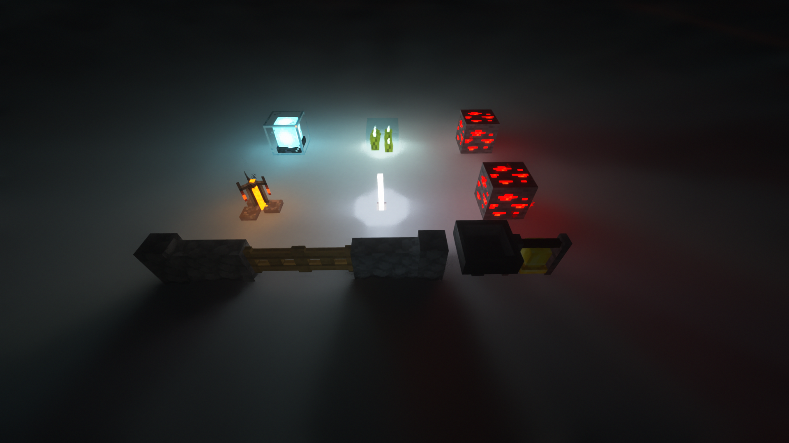
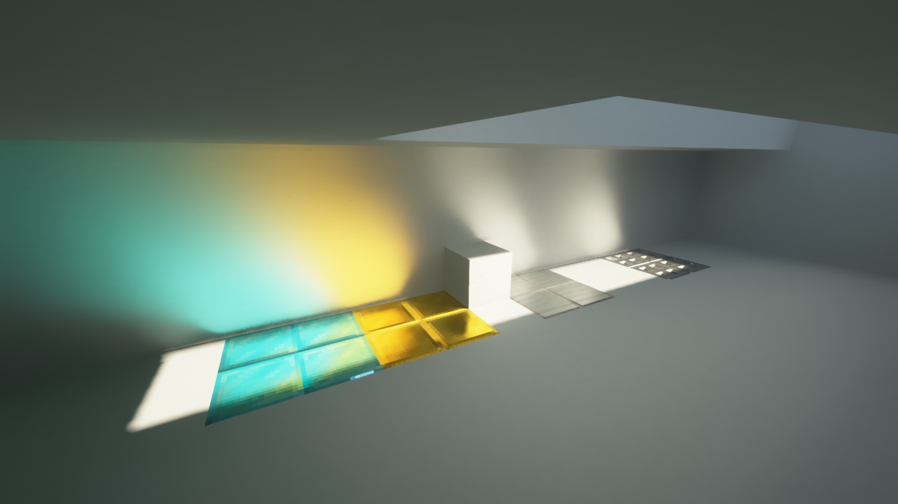

SEUS PTGI GFME
全称：Sonic Ether's Unbelievable Shader Path Tracing Global Illumination GeForceLegend's Modified Edition，SEUS PTGI 深度魔改版本
安装
由于 PTGI 的最终用户许可协议（EULA）的限制，直接分发 PTGI 的代码是非法的，因此您需要按照以下步骤提取 SEUS PTGI GFME：
从发布页面下载 jar 文件，并且如果没有 PTGI HRR 2.1 原版光影文件，请从 Cody 的 Patreon 页面 下载；
将 jar 文件和 PTGI HRR 2.1 光影放在同一目录，然后双击 jar 文件。如果一切正常，将会生成一个新的文件夹（旧版本的 GFME）或一个 zip 文件（更新的 GFME 版本），可以通过将此文件或文件夹移动到
.minecraft/shaderpacks目录中直接使用。
如果双击 jar 文件后没有任何反应，可在 CMD 或 Powershell 中通过 java -jar "<您的 GFME jar 路径>" 运行此 jar 文件以获取更多信息。
特性
逐像素渲染在光线追踪中，包括剪影、透明度甚至 PBR 支持
 更多色彩的原版光源和方块形状
 自动检测纹理分辨率，支持不完整的纹理包

金属阳光焦散
 许多针对原版 PTGI 的小修复和改进...
最新的 Iris 测试版 已兼容
Last modified: 06 August 2024